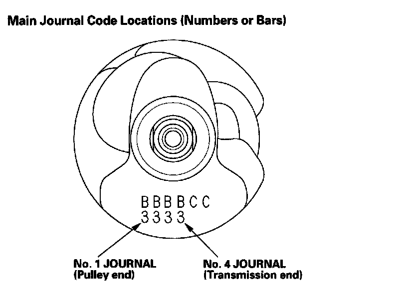

Crankshaft Main Bearing Replacement
Crankshaft Main Bearing ReplacementMain Bearing Clearance Inspection
1. Remove the main bearing caps and bearing halves.
2. Clean each main journal and bearing half with a clean shop towel.
3. Place one strip of plastigage across each main journal.
NOTE: If the engine is still in the vehicle when you bolt the main cap down to check the clearance, the weight of the crankshaft and drive plate will flatten the plastigage further than just the torque on the cap bolt and give you an incorrect reading. For an accurate reading, support the crank with a jack under the counterweights, and check only one bearing at a time.
4. Reinstall the bearings and caps, then torque the bearing cap bolts to 74 N-m (7.5 kgf-m, 54 lbf-ft), and the bearing cap side bolts to 49 N-m (5.0 kgf-m, 36 lbf-ft) in the proper sequence.
NOTE:
^ Apply new engine oil to the bolt threads and flanges.
^ Do not rotate the crankshaft during inspection.
5. Remove the cap and bearing half, and measure the widest part of the plastigage.
6. If the plastigage measures too wide or too narrow, remove the crankshaft, and remove the upper half of the bearing. Install a new, complete bearing with the same color code, and recheck the clearance. Do not file, shim, or scrape the bearings or the caps to adjust clearance.
7. If the plastigage shows the clearance is still incorrect, try the next larger or smaller bearing (the color listed above or below that one), and check again. If the proper clearance cannot be obtained by using the appropriate larger or smaller bearings, replace the crankshaft and start over.
Main Bearing Selection
Crankshaft Bore Code Location
Letters or bars have been stamped on the end of the block as a code for the size of each of the four main journal bores.
Use them, and the numbers stamped on the crankshaft (codes for main journal size), to choose the correct bearings. If the codes are indecipherable because of an accumulation of dirt and dust, do not scrub them with a wire brush or scraper. Clean them only with solvent or detergent.


